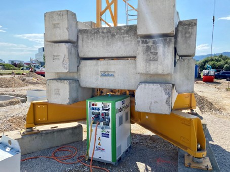

Stromerzeuger sind für den vorgesehenen Einsatz entsprechend dem Leistungsbedarf der zu versorgenden Geräte ausreichend bemessen auszuwählen. Insbesondere sind beim Betrieb von Antrieben mit Frequenzumrichter (FU), z. B. Krane, Aufzüge, Winden, die Empfehlungen der Hersteller zu beachten (siehe Anhang 6 "Hinweise zur Auswahl von Stromerzeugern mit Verbrennungsmotor unter Berücksichtigung der Belastung").
Die Bedienungsanleitung und die Betriebsanweisung müssen am Verwendungsort vorhanden sein und sind zwingend zu befolgen. Der Betrieb von Stromerzeugern ist in der Gefährdungsbeurteilung zu berücksichtigen. Je nach Anwendung sind entsprechende Schutzmaßnahmen vorzusehen. Die erforderlichen Schutzmaßnahmen müssen durch eine Elektrofachkraft festgelegt werden.
Bei der Auswahl eines Stromerzeugers sind Verwendungszweck, Einsatzbedingungen und Eigenschaften des Gerätes festzulegen und auf die technischen Daten der Verbrauchsmittel abzustimmen.
Stromerzeuger müssen mit einem Typschild versehen sein, auf dem vom Hersteller oder von der Herstellerin mindestens nachfolgende Angaben deutlich erkennbar und dauerhaft angebracht sind:
Bei Geräten mit einer Nennleistung > 10 kVA zusätzlich Nennleistungsfaktor.
Die Kennzeichnung des Stromerzeugers (Ausführung "A", "B", "C" oder "D" gemäß Abbildung 6) erfolgt entweder durch den Hersteller oder die Herstellerin oder ist, sofern nicht vorhanden, vor der Inbetriebnahme von einer Elektrofachkraft vorzunehmen.
Damit ist zusammen mit dieser DGUV Information erkennbar, welche Schutzmaßnahmen realisiert werden müssen, damit ein sicherer Betrieb der angeschlossenen Betriebsmittel gewährleistet ist.
Die CE-Kennzeichnung muss entsprechend gesetzlicher Regelungen vorhanden sein. Empfohlen wird, nur Stromerzeuger mit GS-Zeichen zu verwenden.
Transportable Stromerzeuger müssen mit Tragevorrichtungen ausgerüstet sein.
Ab einer Gesamtmasse von 50 kg müssen Anschlagpunkte für den Hebezeugtransport oder Vorrichtungen für den Transport mit Flurförderzeugen vorhanden sein.
Besteht beim Einsatz von Stromerzeugern mit Kurbelstarteinrichtung, z. B. bei Dieselmotoren, die Gefahr von Verletzungen durch Rückschlag, sind geeignete Rückschlagsicherungen oder Sicherheitskurbeln zu verwenden. Bei Seilstarteinrichtungen ist darauf zu achten, dass eine Seilfangeinrichtung vorhanden ist und das Starten gegen die Drehrichtung des Motors verhindert wird.
Stromerzeuger müssen durch die Gestaltung des Gehäuses oder des Aufstellortes so geschützt sein, dass mechanische Beschädigungen und äußere Einwirkungen durch Umgebungstemperatur, Fremdkörper, Wasser oder Feuchtigkeit den sicheren Betrieb nicht beeinträchtigen.
Stromerzeuger müssen zur uneingeschränkten Verwendung im Freien mindestens der Schutzart IP 54, bei Verwendung in Gebäuden mindestens der Schutzart IP 43 entsprechen (siehe DGUV Information 203-005 "Auswahl und Betrieb ortsveränderlicher elektrischer Betriebsmittel nach Einsatzbedingungen"). Beim Einsatz von Geräten mit geringerer Schutzart, allerdings mindestens IP 23, sind zusätzliche Maßnahmen, z. B. Einhausung, erforderlich.
Elektrische Anlagen und Betriebsmittel müssen nach den örtlichen Bedingungen ausgewählt werden. Elektrische Anlagen und Betriebsmittel sind so zu benutzen und so zu betreiben, dass bei bestimmungsgemäßer Verwendung eine elektrische Gefährdung vermieden wird. Bei Vorliegen besonderer Gefährdungen, z. B. erhöhte elektrische Gefährdung, Brand- oder Explosionsgefahr, dürfen elektrische Anlagen und Betriebsmittel nur unter Einhaltung besonderer Bestimmungen benutzt werden.
Zusätzliche Informationen sind unter anderem enthalten in:
Anmerkung:
Auf Bau- und Montagestellen kann es aufgrund der rauen Betriebsbedingungen zu Fehlersituationen kommen, insbesondere Beschädigungen von Kabeln/Leitungen, die nicht in allen Situationen von einer einzelnen Schutz- oder Überwachungseinrichtung erfasst und abgeschaltet werden können. Aus diesem Grund kann es erforderlich sein, mehr als eine Schutz- oder Überwachungseinrichtung zu fordern, z. B. IMD und RCD.

Abb. 1 Elektrochemischer Energiespeicher auf einer Baustelle
Der Aufstellort ist so zu wählen oder vorzubereiten, dass der Stromerzeuger standsicher aufgestellt und bestimmungsgemäß betrieben werden kann und die Schutzart den Anforderungen, die sich aus dem Aufstellort ergeben, genügt.
Stromerzeuger mit Verbrennungsmotor sind aufgrund der Abgase möglichst im Freien zu betreiben. Dabei ist darauf zu achten, dass die Abgase nicht in Schächte oder angrenzende Gebäude eindringen können. Müssen solche Stromerzeuger innerhalb von Gebäuden betrieben werden, sind Abgase und Abluft über Rohre/Schläuche ins Freie abzuleiten und es ist für ausreichende Kühl- und Frischluftzufuhr zu sorgen.
Stromerzeuger kleiner Leistung (bis ca. 10 kW) mit Verbrennungsmotor dürfen grundsätzlich nur im Stillstand betankt werden. Die Anweisungen des Herstellers oder der Herstellerin hierzu sind zu beachten.
Insbesondere beim Einsatz von elektrochemischen Energiespeichern sind hinsichtlich einer möglichen Brandgefahr die Herstellervorgaben zum Aufstellort zu beachten.
| Mechanische Einwirkungen von außen, die auch nur
zu leichten Verformungen/Beschädigungen des Gehäuses
führen, können bei elektrochemischen Energiespeichern
Brände verursachen. Zum Schutz gegen Überhitzung von elektrochemischen Energiespeichern ist der Aufstellort bei hohen Außentemperaturen bevorzugt zu verschatten. |